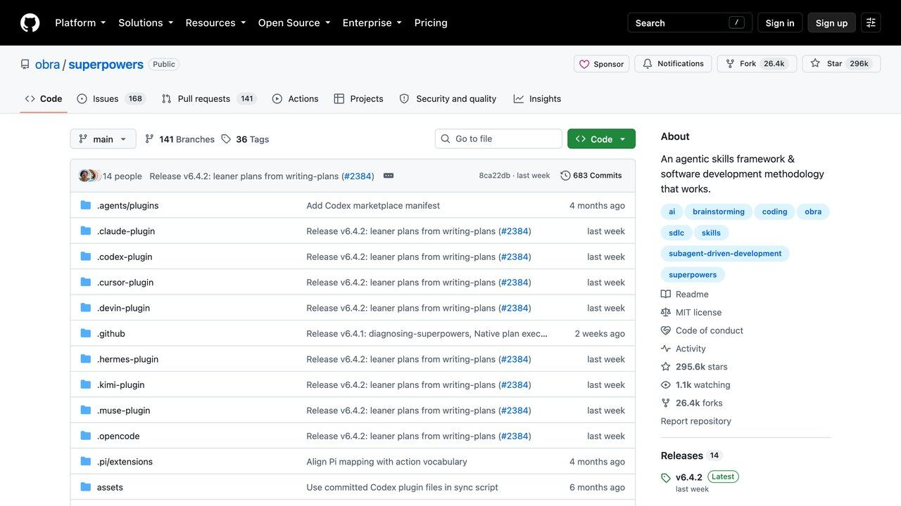
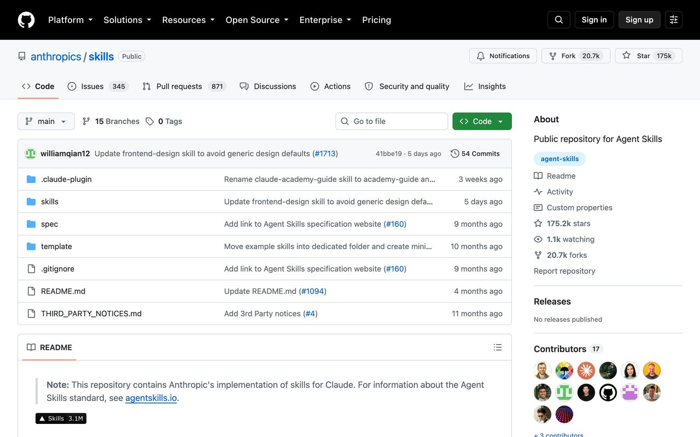
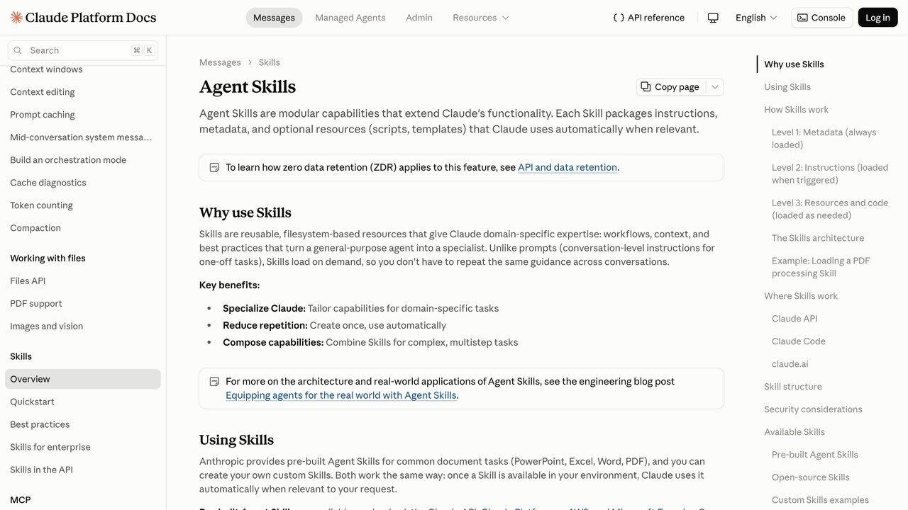

Las mejores Claude Skills de 2026: la lista que necesitas
El repositorio oficial de Anthropic pasó de cero a más de 175.000 estrellas en un año. Qué es exactamente una Skill, cómo instalar una en dos minutos, y cuáles de las miles que existen merecen de verdad un hueco en tu carpeta.
Hace poco más de un año, "Skill" era una palabra que solo usaban unos pocos usuarios avanzados de Claude Code. Hoy, el repositorio público de Anthropic en GitHub —anthropics/skills— acumula más de 175.000 estrellas, y los directorios comunitarios ya catalogan más de 12.000 skills creadas por terceros. Es, con diferencia, el estándar que más rápido ha crecido en todo el ecosistema de Claude en 2026.
El problema de un crecimiento así de rápido es el ruido: con miles de skills disponibles, encontrar las tres o cuatro que de verdad cambian tu flujo de trabajo, en vez de ser una curiosidad que instalas y olvidas, se ha vuelto su propio reto. Esta guía filtra ese ruido: qué es exactamente una Skill, cómo se instala de verdad, y un listado por categoría de las que tienen tracción real, no solo la que más marketing tiene.
Vale la pena aclarar desde el principio qué tipo de contenido es este y qué no: no es una lista patrocinada ni un ranking comprado, y tampoco pretende ser exhaustiva sobre las más de doce mil skills que existen a día de hoy. Es una selección editorial basada en tracción verificable (instalaciones reportadas, actividad del repositorio, si el autor es Anthropic o alguien reconocible en la comunidad) más el mismo criterio de utilidad real que aplicamos en el resto de esta web: si una skill resuelve un problema concreto y repetido, entra en la lista; si solo suena bien en una demo de treinta segundos, no.

Las 5 skills del reel: dónde conseguirlas y cómo instalarlas
Si vienes del reel, aquí las tienes. Cada una con su enlace oficial y el comando exacto para instalarla en Claude Code. En la web y la app de Claude, las de Word, PowerPoint y Excel ya vienen incluidas: basta con pedirle el documento.
-
1
Frontend Design
Diseña webs e interfaces con criterio de diseñador (tipografía, contraste, jerarquía) en vez del aspecto genérico de siempre.
Dónde conseguirla: anthropics/skills · oficial de Anthropic ↗
Instalar en Claude Code:
/plugin marketplace add anthropics/skills/plugin install example-skills@anthropic-agent-skills -
2
Superpowers
Hace que Claude trabaje como un ingeniero serio: pregunta antes de programar, planifica, escribe los tests primero y revisa antes de dar algo por terminado.
Dónde conseguirla: obra/superpowers · comunidad ↗
Instalar en Claude Code:
/plugin install superpowers@claude-plugins-official -
3
Word, PowerPoint y Excel (docx · pptx · xlsx)
Las skills oficiales de documentos: Claude te entrega el archivo .docx, .pptx o .xlsx terminado y con formato, no solo el texto. El paquete incluye también la de PDF.
Dónde conseguirla: anthropics/skills · oficial de Anthropic ↗
Instalar en Claude Code:
/plugin marketplace add anthropics/skills/plugin install document-skills@anthropic-agent-skills -
4
Skill Creator
Te hace unas preguntas sobre una tarea que repites y escribe por ti el SKILL.md de tu propia skill, con la estructura correcta.
Dónde conseguirla: anthropics/skills · oficial de Anthropic ↗
Instalar en Claude Code:
/plugin marketplace add anthropics/skills/plugin install example-skills@anthropic-agent-skills -
5
Remotion
Crea vídeos animados escribiendo código (React) en vez de editar fotograma a fotograma. Con ella está hecho el reel.
Dónde conseguirla: remotion-dev/skills · oficial de Remotion ↗
Instalar en Claude Code:
npx skills add remotion-dev/skills
Antes de instalar cualquier skill, lee el apartado de riesgos más abajo: una skill son instrucciones que Claude va a seguir.
La skill del diseño de Apple (apple-design)
Si vienes del reel, aquí la tienes. Es la skill apple-design de Emil Kowalski: resume en 17 principios las charlas de diseño de Apple (sobre todo Designing Fluid Interfaces, WWDC 2018) y se los enseña a Claude para que las animaciones, los espacios, la tipografía y la jerarquía de tus interfaces queden cuidados. Es gratis y de código abierto (licencia MIT).
-
1
apple-design
Movimiento con muelle que puedes interrumpir, materiales translúcidos con profundidad, tipografía bien ajustada y los principios de diseño de Apple, adaptados a la web.
Dónde: emilkowalski/skills · apple-design ↗
Instalar en Claude Code:
npx skills@latest add emilkowalski/skillsEl comando instala la colección completa de Emil Kowalski. Luego pídele a Claude que diseñe con la skill apple-design.
Antes de instalar cualquier skill, lee el apartado de riesgos más abajo: una skill son instrucciones que Claude va a seguir.
Qué es exactamente una Skill
Una Skill es, en su forma más simple, un archivo de texto llamado SKILL.md con dos partes: una cabecera corta (nombre y descripción) que Claude usa para decidir cuándo esa skill es relevante, y el cuerpo, con las instrucciones detalladas de cómo hacer bien esa tarea concreta — un procedimiento, un checklist, convenciones de estilo, ejemplos de lo que sí y lo que no. No es código que se ejecuta; es contexto experto que Claude lee y sigue, exactamente igual que seguiría una instrucción tuya, solo que reutilizable y activable por nombre.
La diferencia con MCP, en una frase:
MCP le da a Claude acceso a algo nuevo (una base de datos, una API). Una Skill le enseña a Claude a hacer algo mejor con lo que ya tiene. Muchas skills serias, de hecho, incluyen instrucciones sobre cuándo usar un servidor MCP concreto — se combinan, no compiten. Lo explicamos con más detalle en nuestra guía sobre MCP.
Las skills se activan de dos formas: automáticamente, cuando Claude detecta por el contexto de tu petición que una skill instalada es relevante para lo que pides, o explícitamente, escribiendo su nombre con una barra (por ejemplo, /nombre-de-la-skill) para forzar su activación aunque el contexto no lo deje claro. Esa segunda vía es la que usan la mayoría de guías y tutoriales, porque es predecible: sabes exactamente cuándo se está aplicando.
Un ejemplo concreto de la diferencia: con la skill de generación de documentos docx instalada, pedir "redacta un informe sobre ventas del trimestre" puede o no activarla automáticamente según cómo de clara sea la petición — pero escribir /docx redacta un informe sobre ventas del trimestre la activa siempre, sin ambigüedad. Cuando una skill es crítica para el resultado (el formato final tiene que ser exacto, no aproximado), la activación explícita es la opción más segura.
Las skills también se pueden combinar en una misma conversación: nada impide tener activas a la vez una skill de estilo de código, otra de generación de documentos y una tercera de convenciones de commits de Git, cada una aportando su propio fragmento de contexto experto al mismo hilo de trabajo. El límite práctico no es técnico, es de claridad — cuantas más skills compiten por activarse en el mismo contexto, más importa que cada description sea inequívoca sobre cuándo le toca a ella y no a otra.
Instalar tu primera skill en dos minutos
En Claude Code, instalar una skill es tan simple como colocar una carpeta con un archivo SKILL.md dentro en la ubicación correcta. Hay dos niveles: skills de proyecto (solo activas en ese repositorio concreto) y skills personales (activas en cualquier proyecto que abras).
# Skill personal, disponible en todos tus proyectos mkdir -p ~/.claude/skills/mi-skill nano ~/.claude/skills/mi-skill/SKILL.md # Contenido mínimo del archivo: --- name: mi-skill description: Explica en una frase cuándo Claude debe usar esta skill --- Aquí van las instrucciones detalladas: el procedimiento paso a paso, ejemplos de formato correcto, qué evitar y por qué.
El campo description del encabezado importa más de lo que parece: es el único fragmento que Claude ve siempre, para todas las skills instaladas, al decidir cuál activar. Una descripción vaga ("ayuda con documentos") compite mal contra una específica ("genera archivos .docx con formato corporativo a partir de una plantilla"). Cuanto más preciso el description, menos confusión cuando tienes diez o veinte skills instaladas a la vez.
Para instalar skills de terceros publicadas en GitHub, el patrón habitual es clonar o copiar esa carpeta concreta dentro de ~/.claude/skills/. No hay un instalador único ni una tienda oficial centralizada todavía — la distribución sigue siendo, en gran medida, copiar archivos, lo cual es también la razón por la que la sección de seguridad más abajo importa tanto.
Una skill puede ser tan corta como diez líneas o tan larga como varios cientos, e incluso incluir archivos adicionales junto al SKILL.md —plantillas, scripts auxiliares, ejemplos de referencia— que la propia skill indica cuándo consultar. Eso permite algo que un simple prompt guardado no puede: una skill de generación de documentos puede incluir la plantilla real de la empresa como archivo adjunto, y las instrucciones le dicen a Claude exactamente cuándo abrirla y cómo rellenarla, en vez de intentar describir el formato entero en texto.
Filtra por categoría
El ecosistema se organiza, a grandes rasgos, en seis familias. Pulsa una para ver solo esas skills.
La skill más usada de todo el ecosistema. Aplica criterio de diseño real (tipografía, contraste, jerarquía) en vez de las interfaces genéricas por defecto.
Uso: cualquier interfaz, landing o artefacto visual.
Impone hábitos de ingeniería seria: escribir tests antes que código, revisar antes de dar por terminado, no saltarse pasos por prisa.
Uso: proyectos de código donde la disciplina importa más que la velocidad.
Familia de skills oficiales de Anthropic para generar documentos de Office con formato correcto de verdad, no solo texto plano.
Uso: informes, presentaciones y hojas de cálculo entregables.
Guía la construcción de artefactos web complejos con criterio visual propio, en vez de plantillas genéricas repetidas.
Uso: apps, dashboards y páginas dentro de Claude.
Ayuda a construir tu propio servidor MCP paso a paso, con las convenciones correctas del protocolo desde el primer intento.
Uso: si vas a conectar Claude a una herramienta propia.
Skill oficial para crear skills: te entrevista sobre qué necesitas y redacta el SKILL.md por ti, con la estructura correcta.
Uso: tu primera skill propia, sin partir de cero.
Genera vídeo programático (animaciones, explicativos) escribiendo la composición en código en vez de editar fotograma a fotograma.
Uso: vídeos cortos explicativos o de datos animados.
Colección de convenciones de código inspiradas en el estilo de ingeniería de Andrej Karpathy: simple, legible, sin abstracciones prematuras.
Uso: mantener el código simple en proyectos que crecen rápido.

Por qué "más instalaciones" no siempre significa "mejor para ti"
Frontend Design es la skill más instalada del ecosistema por una razón concreta y medible: la inmensa mayoría de usuarios de Claude generan interfaces en algún momento, así que el público potencial es enorme. Eso no la convierte automáticamente en la más útil para ti si tu trabajo diario es código de backend sin interfaz, análisis de datos o redacción de documentos legales — para esos casos, una skill mucho menos instalada pero específica de tu dominio aporta más que la más popular del ranking general.
El criterio real para elegir no es el número de instalaciones, es una pregunta más simple: ¿esta skill codifica un conocimiento que yo repetiría manualmente en cada conversación si no existiera? Si la respuesta es sí —"siempre le explico que use este formato", "siempre tengo que recordarle esta convención"—, esa es la skill que de verdad ahorra tiempo, tenga cien instalaciones o cien mil.
Un caso real de esto: un despacho de abogados pequeño escribía, cada vez que pedía un contrato tipo, la misma lista de cláusulas obligatorias, el mismo formato de numeración y el mismo pie de página con los datos del despacho — tres párrafos de instrucciones repetidos en cada conversación nueva, con el riesgo añadido de olvidar alguno. Convertir esas instrucciones en una skill propia de diez minutos eliminó por completo ese trabajo repetitivo: ahora basta con /contrato-tipo redacta uno para un arrendamiento de local comercial, y el formato correcto se aplica siempre, sin que nadie tenga que acordarse de repetirlo. Esa skill tiene, con toda seguridad, cero instalaciones fuera de ese despacho — y es, para ellos, más valiosa que cualquiera de las que aparecen en los rankings públicos.
Riesgos: una skill son instrucciones, no un sandbox
Una skill maliciosa puede instruir mal, no solo fallar
A diferencia de instalar un paquete de código que corre aislado, una skill son instrucciones en texto plano que Claude sigue con tu mismo nivel de confianza que una instrucción tuya. Una skill de un autor desconocido con instrucciones ocultas o mal intencionadas puede influir en el comportamiento del agente de formas sutiles. Revisa el contenido del archivo, no solo su descripción, antes de instalar algo que no sea del repositorio oficial de Anthropic o de un autor que reconozcas.
Demasiadas skills activas confunden más que ayudan
Cada skill instalada añade su descripción al contexto que Claude evalúa constantemente. Veinte skills con descripciones solapadas o vagas generan más confusión sobre cuál activar que ninguna. Es mejor mantener pocas, bien escritas y con propósitos claramente distintos entre sí.
Una skill desactualizada puede enseñar prácticas obsoletas
Las convenciones de una skill de código, por ejemplo, pueden quedar desfasadas cuando cambia una librería o una API. Revisa la fecha de la última actualización del repositorio antes de confiar en una skill de comunidad que lleve mucho tiempo sin tocarse.
Skills con permisos amplios sin necesitarlos
Algunas skills incluyen scripts auxiliares que Claude puede ejecutar como parte de su funcionamiento. Antes de instalar una que traiga código ejecutable, revisa qué hace ese script exactamente — el mismo principio de mínimo privilegio que aplicarías a cualquier herramienta con acceso a tu sistema, cubierto con más detalle en nuestra guía de protección de datos al conectar la IA.
Ninguno de estos riesgos es motivo para evitar las skills por completo — el propio repositorio oficial de Anthropic, con cientos de miles de estrellas, demuestra que el modelo funciona y aporta valor real a diario para una comunidad enorme. Son, simplemente, el mismo tipo de precaución razonable que ya aplicas al instalar cualquier otra cosa de un desconocido en tu ordenador: revisar antes de confiar, y confiar más rápido cuanto más reconocible sea la fuente.
Mantener tu carpeta de skills sana con el tiempo
Igual que un móvil acumula aplicaciones que ya no usas, una carpeta de skills tiende a llenarse con el tiempo de instalaciones puntuales que probaste una vez y olvidaste. La revisión periódica no es opcional si quieres que la activación automática siga siendo fiable: cada skill inactiva sigue compitiendo silenciosamente por el contexto cada vez que Claude decide qué activar, aunque no aporte nada desde hace meses.
- Revisa la carpeta cada pocos meses:
ls ~/.claude/skills/te da la lista completa en un segundo. - Elimina lo que no hayas usado en el último trimestre sin miedo — si la instalaste desde un repositorio público, siempre puedes volver a copiarla en treinta segundos si la necesitas otra vez.
- Vigila las actualizaciones de las que sí uses a diario: las skills de código en particular envejecen con las librerías que describen, así que una revisada hace un año puede estar dando instrucciones desactualizadas sin que lo notes.
- Documenta las tuyas propias: si el despacho o el equipo crea varias skills internas, un archivo README corto en la propia carpeta de skills, explicando qué hace cada una, ahorra confusión cuando se incorpora alguien nuevo al equipo.
Caveman: Claude habla como un cavernícola y gasta menos
Caveman es una herramienta gratuita y de código abierto (Apache-2.0) para Claude Code y más de 30 agentes. Hace que el agente responda con frases cortas, al estilo cavernícola, sin tocar el código que escribe. En el ejemplo del proyecto, una explicación de 63 tokens se queda en 20 con el mismo arreglo.
Cómo instalarlo
- Necesitas Node.js 22.13 o superior.
- En la terminal, ejecuta
npx @caveman-ai/cli@latest. Detecta tus agentes, te enseña qué va a cambiar y confirmas con Enter. - Abre Claude Code como siempre: ya responde en modo cavernícola.
- Con
caveman statusves qué partes están activas y concaveman offapagas la que no quieras.
Además de responder corto, la versión 4 comprime registros, JSON y resultados de tests antes de que el modelo los lea, y tiene un modo que elige modelo y esfuerzo por ti (ese necesita una cuenta gratuita).
Lo honesto: el ahorro (un 33,2 % menos de tokens de entrada por sesión en sus pruebas, según sus autores) depende de cómo trabajes. Si te gustan las explicaciones detalladas, te parecerá demasiado seco; puedes apagarlo cuando quieras.
Repositorio: github.com/JuliusBrussee/caveman
Arena: 100 Claudes compiten por tu respuesta
Arena es una skill gratuita (MIT) para Claude Code pensada para cuando no te convence lo que te ha dado Claude. En vez de preguntar una y otra vez, /arena lanza 100 subagentes con exactamente la misma tarea, pero cada uno con una carta de estrategia distinta.
Cómo funciona
- Los agentes se emparejan. Cada uno ataca la solución del otro y defiende y mejora la suya.
- Un juez puntúa cada duelo con una rúbrica escrita.
- El perdedor queda fuera: 100, 50, 25, 13, 7, 4, 2 y 1.
- Recibes la solución ganadora, los ataques que superó y cuántas rondas hicieron falta.
Instalación
Pega el enlace del repositorio en Claude Code y pídele que instale la skill, o usa /plugin marketplace add Jakeschincariol/arena-skill y /plugin install arena-skill@arena-skill. Los agentes trabajan dentro de una carpeta .arena/ y no tocan tus archivos.
Lo honesto: es muy cara en tokens. Con 100 agentes son unas 595 llamadas al modelo, según el proyecto. Para el día a día, baja el número con --agents 8 y guarda los 100 para decisiones importantes.
Repositorio: github.com/Jakeschincariol/arena-skill
Ponytail: el Claude más vago escribe menos código
Ponytail es una skill gratuita (licencia MIT) que mete en tu agente de IA al típico programador veterano que mira cincuenta líneas y las sustituye por una. Funciona en Claude Code y en unos 20 agentes más.
Cómo trabaja
Antes de escribir código, recorre una escalera y se para en el primer escalón que sirve: ¿hace falta esto?, ¿ya existe en el proyecto?, ¿lo resuelve la biblioteca estándar?, ¿hay una función nativa de la plataforma?, ¿una dependencia ya instalada? Solo después escribe algo nuevo. En el ejemplo del proyecto, un selector de fechas pasa de 335 líneas a un archivo de 10 que usa el selector del navegador.
Instalación y uso
- Sigue las instrucciones de instalación para Claude Code del README.
- Trabaja como siempre: la skill se aplica al programar.
- Usa
/ponytail-reviewpara revisar un cambio y/ponytail-auditpara revisar el proyecto entero por prioridad.
Lo honesto: las cifras (-53 % de código, -26 % de coste, 98 % de lógica delicada con test) salen del benchmark de sus autores con 39 tareas. La regla no es escribir menos a toda costa: nunca quita validación, seguridad ni accesibilidad.
Repositorio: github.com/DietrichGebert/ponytail
Impeccable: Claude juzga el diseño de tu web
Los modelos de IA han aprendido de las mismas plantillas y, sin guía, repiten los mismos tics: tipografía Inter para todo, degradados de morado a azul, tarjetas dentro de tarjetas o texto gris sobre fondos de color. Impeccable es una skill gratuita (Apache-2.0) que da a tu agente un vocabulario de diseño y 59 reglas automáticas para detectarlos.
Cómo empezar
- En la carpeta de tu proyecto, ejecuta
npx impeccable install. - Dentro de Claude Code (u otro agente), lanza
/impeccable init: hace unas preguntas y guarda enPRODUCT.mdpara quién es tu web y qué tono tiene. - Usa los comandos que necesites.
Los tres más útiles
/impeccable critique: revisión de diseño (jerarquía, claridad, impacto)./impeccable audit: comprobaciones técnicas de accesibilidad, rendimiento y adaptación a móvil./impeccable polish: repaso final antes de publicar.
Hay 24 comandos en total, como bolder, quieter o animate.
Lo honesto: funciona sobre el código de tu web, así que necesitas un agente de programación y acceso a ese código. No sirve para webs hechas en constructores cerrados.
Repositorio: github.com/pbakaus/impeccable
Anatomy: Claude dibuja cómo funciona cualquier cosa
Anatomy es una skill gratuita (MIT) para Claude Code y otros agentes que convierte una idea técnica en una ilustración interactiva. En lugar de un diagrama de cajas, se inventa un objeto físico cuyo funcionamiento es el concepto: en el ejemplo del proyecto, una caché que evita repetir trabajo se convierte en una cerradura de pernos que solo gira cuando todos encajan.
Instalación
- Necesitas Node.js. En la terminal:
npx skills add wheresryan22/anatomy -g -a claude-code. - En Claude Code, pide lo que quieras explicar:
/anatomy explica cómo funciona un limitador de peticiones, interactivo. - Abre el HTML que genera en el navegador.
No necesita claves de API ni instalar dependencias: usa solo módulos integrados de Node.
Qué entrega
- SVG: piezas isométricas sólidas con cuatro tonos de sombra, en una tarjeta con título, pista y lectura en vivo.
- SVG + WebGL: para fuego, agua, luz o vapor.
- 3D (beta): piezas que giran o se doblan de verdad.
Sirve como página HTML, archivo SVG o componentes de React.
Lo honesto: está pensada para agentes de programación; en el chat normal de Claude no funciona igual. El modo 3D sigue en beta.
Repositorio: github.com/wheresryan22/anatomy
Answer me with HTML: respuestas en una página
Cuando le haces a Claude una pregunta compleja, la respuesta suele ser un muro de texto. Answer me with HTML es una skill gratuita (MIT) que cambia el formato: el agente escribe un borrador breve y una herramienta incluida lo convierte en una página HTML con esquemas, tablas y diagramas.
Instalación
- Necesitas Node.js 20 o superior. No hay que ejecutar
npm install. - En Claude Code:
/plugin marketplace add QingYunA/answer-me-with-htmly después/plugin install answer-me-with-html@answer-me-with-html. - También puedes pedirle a tu agente que lea el archivo INSTALL.md del repositorio y lo instale solo.
Cómo se usa
Pregunta como siempre: «Explícame cómo funciona el protocolo TCP», «¿Redis o Memcached para nuestra caché?». En unos instantes tienes la página lista para abrir en el navegador.
Según las mediciones del proyecto, el modelo escribe unos 612 tokens frente a 4.893 cuando se le pide el HTML completo, y tarda 12 segundos en lugar de 31, porque el diseño y los diagramas los genera la herramienta.
Lo honesto: las cifras son del benchmark de sus autores. Está pensada para agentes de programación, no para el chat de claude.ai.
Repositorio: github.com/QingYunA/answer-me-with-html
Archify: de una frase a un esquema interactivo
Archify es una skill gratuita (MIT) para agentes como Claude Code, Codex, Cursor u OpenCode que convierte una idea, un plan o el código de un proyecto en un diagrama interactivo. No hace falta tener un repositorio: puedes empezar con una descripción.
Cómo usarla
- Instálala con
npx skills add tt-a1i/archify -g. - Pídele a tu agente algo como: «Usa Archify para dibujar cómo funciona el proceso de pedidos de mi tienda: el cliente paga, se avisa al almacén y se envía».
- Ajusta con frases: «añade la devolución», «resalta el camino cuando falla el pago», «cambia al tema claro».
- Abre el HTML resultante: puedes tocar cada nodo para ver detalles y seguir caminos.
El resultado es un archivo HTML autónomo. Puedes mandarlo a otra persona y lo abrirá en su navegador con todas las interacciones, sin instalar nada. En la galería del proyecto hay ejemplos, como un itinerario de cuatro días por Shanghái.
Lo honesto: funciona con agentes de programación; en el chat normal de Claude no se instala igual. Es mejor para procesos y sistemas que para dibujos libres.
Repositorio: github.com/tt-a1i/archify
Las skills oficiales de Anthropic
Además de las skills de la comunidad, Anthropic mantiene un repositorio oficial con skills de ejemplo para Claude. Es uno de los proyectos más seguidos de GitHub y un buen punto de partida para entender cómo funcionan.
Qué incluye
- Documentos:
docx,xlsx,pptxypdf, las skills que hay detrás de la capacidad de Claude para crear y editar archivos. - Diseño:
frontend-designpara webs con más personalidad ycanvas-designpara piezas gráficas. - Marca:
brand-guidelinesytheme-factory. - Para crear las tuyas:
skill-creator, además de una plantilla y la especificación de Agent Skills. - Otras: arte generativo, pruebas de aplicaciones web y creación de servidores MCP.
Cómo instalarlas en Claude Code
- Ejecuta
/plugin marketplace add anthropics/skills. - Elige Browse and install plugins, después anthropic-agent-skills.
- Instala document-skills o example-skills.
Lo honesto: el repositorio advierte de que son implementaciones para demostración y educación, y que el comportamiento dentro de las apps de Claude puede ser distinto. Muchas son Apache 2.0; las de documentos tienen otra licencia (código visible, no libre).
Repositorio: github.com/anthropics/skills
Design DNA: extrae el estilo de un diseño que te gusta
Decirle a una IA «hazlo moderno y elegante» da resultados genéricos. Design DNA es una skill gratuita (MIT) que convierte referencias visuales en una descripción medible del diseño, en formato JSON, para que el agente pueda reproducir el estilo con tu propio contenido.
Las tres dimensiones
- Sistema de diseño: color, tipografía, espaciado, maquetación, formas, sombras, movimiento y componentes.
- Estilo: ambiente, lenguaje visual, composición, imágenes y tono.
- Efectos visuales: Canvas, WebGL, 3D, partículas, animaciones con scroll, efectos de cursor o glassmorphism.
Cómo usarla
- Instálala con
npx skills add zanwei/design-dna(necesitas Node.js). Para Claude Code:npx skills add zanwei/design-dna -a claude-code -g -y. - Pásale a tu agente capturas, imágenes o enlaces de diseños de referencia y pídele que analice su ADN.
- Revisa el JSON resultante y ajusta lo que no te convenza.
- Pide que genere tu página con ese ADN y tu contenido.
Lo honesto: es una herramienta para inspirarte y entender decisiones de diseño. Copiar la identidad de otra marca (logos, textos, imágenes) puede infringir derechos. Mezcla varias referencias y aporta tu propio contenido.
Repositorio: github.com/zanwei/design-dna